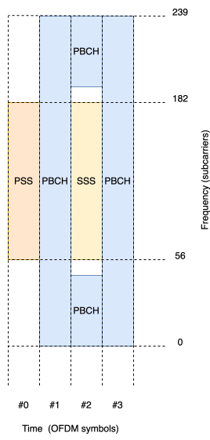
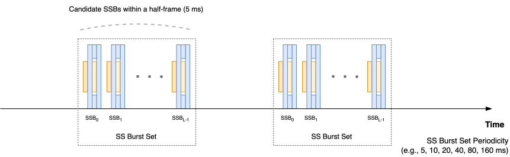
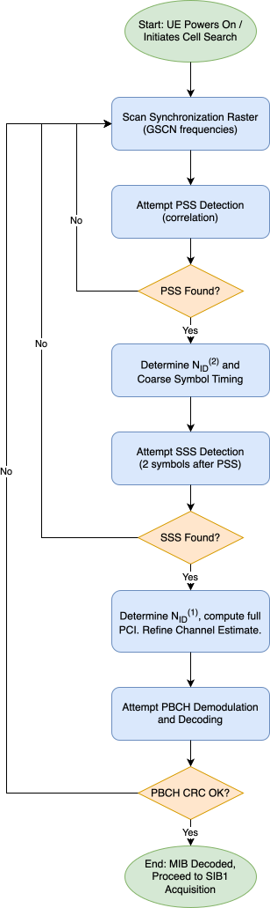
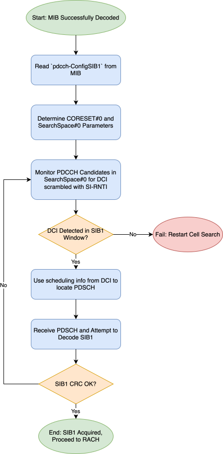

In the intricate ballet of mobile communication, the initial moments of interaction between a User Equipment (UE) and the network are paramount. Before any data can be exchanged, services accessed, or advanced features leveraged, a UE awakening from an idle state, or entering a new coverage area, must first perceive and synchronize with a suitable cell. This fundamental process, known as cell acquisition, forms the bedrock upon which all subsequent communication is built. In the context of 5G New Radio (NR), this process is meticulously defined, balancing the demands of diverse service requirements—from enhanced Mobile Broadband (eMBB) to Ultra-Reliable Low-Latency Communication (URLLC) and massive Machine-Type Communication (mMTC)—with the need for efficiency and robustness across a wide array of deployment scenarios and frequency bands. At the heart of this initial handshake lie two critical components: the Synchronization Signal Block (SSB) and System Information Block Type 1 (SIB1). The SSB acts as the primary beacon, broadcasting essential physical layer information and enabling the UE to achieve fundamental time and frequency synchronization, identify the cell, and decode the most basic system parameters. Following successful SSB detection and decoding of its payload—the Master Information Block (MIB)—the UE thenembarks on acquiring SIB1. This system information block provides more detailed parameters essential for initial access, including crucial configurations for the Random Access CHannel (RACH) procedure, the common control resources, and the initial operational bandwidth part. Understanding the Layer 1 (L1) structure, transmission mechanisms, and UE processing involved in detecting the SSB and acquiring SIB1 is therefore indispensable for anyone involved in the design, implementation, testing, or research of 5G NR systems.
The cell acquisition procedure is more than just a preliminary step; it is a critical determinant of overall system performance and user experience. Its efficiency directly impacts how quickly a UE can connect to the network, influencing call setup times, data session initiation latency, and the seamlessness of mobility. For a UE powering on, it's the gateway to service; for a UE in connected mode experiencing mobility, efficient re-acquisition in a target cell is vital for maintaining session continuity. A failure or significant delay in cell acquisition renders a device effectively offline, underscoring its foundational importance. The design choices embedded within these initial procedures reflect core 5G NR philosophies: flexibility in catering to diverse numerologies, frequency bands (FR1 and FR2), and deployment types; beam-centric operation, especially critical in higher frequency bands where the SSB itself is transmitted in beams and its detection is intrinsically linked to initial beam selection; forward compatibility by providing essential parameters while allowing for future evolution; and efficiency in minimizing the overhead of always-on signals while ensuring robust detection. For network operators, optimizing cell acquisition contributes to better resource utilization and improved KPIs, while for researchers and 3GPP contributors, a deep understanding of these mechanisms is key to proposing meaningful enhancements and addressing future network challenges such as network energy saving, Non-Terrestrial Networks (NTN), and support for varied UE capabilities like Reduced Capability (RedCap) devices.
This article provides a comprehensive and technically profound exploration of the L1 aspects of 5G NR cell acquisition, focusing specifically on the Synchronization Signal Block (SSB) and the acquisition of System Information Block Type 1 (SIB1). It aims to deconstruct the SSB, detailing its composition, MIB payload, transmission characteristics including beam sweeping, and UE L1 detection procedures. Furthermore, it elucidates the L1 mechanisms for SIB1 acquisition post-MIB, including the role of CORESET#0 and its scheduling DCI. The discussion endeavors to provide in-depth insights into the design rationale and interplay of parameters, serving as a guided tour through the relevant concepts and addressing advanced considerations such as performance in varied scenarios and frequency ranges. This work lays the groundwork for understanding subsequent procedures like Random Access.
The Synchronization Signal Block (SSB): Beacon of the NR Cell
The Synchronization Signal Block (SSB), also referred to as the SS/PBCH block, stands as the cornerstone of a User Equipment's (UE) initial interaction with a 5G New Radio (NR) cell. It is a meticulously designed Layer 1 (L1) construct, periodically transmitted by the gNB, serving as the primary beacon that allows UEs to detect the presence of NR cells and proceed with network entry. For a UE powering on or searching for service, the SSB provides the very first point of contact, enabling it to achieve fundamental downlink synchronization in both time and frequency. By detecting and processing the SSB, the UE identifies the cell's unique Physical Cell Identity (PCI) and acquires the most essential system parameters from the embedded Master Information Block (MIB). This includes pointers to the control resources needed to find the critical System Information Block Type 1 (SIB1). In the beam-centric paradigm of NR, particularly in Frequency Range 2 (FR2), the successful detection of a specific SSB also constitutes an initial downlink beam selection, a vital first step in beam management. Beyond initial access, the SSB's role extends throughout the UE's lifecycle, proving vital for seamless mobility. UEs in RRC_IDLE, RRC_INACTIVE, and RRC_CONNECTED states continuously perform measurements on SSBs from the serving and neighbor cells to evaluate cell quality. These measurements fuel the algorithms for cell selection, reselection, and handover decisions. Furthermore, the robust detection of the SSB is integral to recovery procedures such as Radio Link Failure (RLF) and Beam Failure Recovery (BFR). The design of the SSB, therefore, represents a critical trade-off: it must be comprehensive enough to support these diverse roles, yet efficient enough to minimize overhead as an always-on signal.
Composition and Structure of the SSB

The Primary Synchronization Signal (PSS) is the first signal a UE searches for, providing the initial anchor for timing and cell identity. It is a BPSK-modulated m-sequence of length 127, chosen for its excellent auto-correlation properties that enable robust symbol timing synchronization. Its detection yields the $N_{\text{ID}}^{(2)}$ component of the Physical Cell Identity (PCI). For reliable detection, the PSS is strategically placed in the first OFDM symbol ($l=0$) of the 4-symbol SSB, occupying the central 127 subcarriers ($k=56$ to $k=182$). The flanking subcarriers within that symbol are set to zero, creating internal guard bands that improve detection performance.
Once the PSS is detected, the UE decodes the Secondary Synchronization Signal (SSS). The primary purpose of the SSS is to determine the $N_{\text{ID}}^{(1)}$ component, which completes the PCI. From a practical receiver perspective, its fixed position relative to the PSS also serves as a validation of the initial PSS detection and allows for a refined channel estimate across the SSB. The SSS is transmitted in the third OFDM symbol ($l=2$) of the SSB, also occupying the central 127 subcarriers.
With the PCI determined, the UE's final task is to decode the Physical Broadcast Channel (PBCH). The PBCH carries the Master Information Block (MIB), which contains the most essential L1/L2 parameters required to find SIB1. The core MIB information is provided by the RRC layer every 80 ms, but the physical layer augments this by adding dynamic timing information (like the SFN LSBs) to the payload of each PBCH transmission. This payload undergoes Polar coding and is scrambled with a PCI- and beam-specific sequence before being mapped to the resources in the SSB not occupied by PSS or SSS. Embedded Demodulation Reference Signals (DMRS), also scrambled with a cell- and beam-specific identity, enable channel estimation for the PBCH and provide inherent interference randomization from neighboring cells' SSBs.
The table below outlines the key MIB fields from an L1 perspective and their direct relevance to a UE's initial actions.
| MIB Field | L1 Relevance & Initial UE Action |
|---|---|
systemFrameNumber |
Provides the 6 most significant bits of the SFN. Combined with timing bits from the PBCH physical layer processing, this allows the UE to establish absolute radio frame timing. |
subCarrierSpacingCommon |
Informs the UE of the subcarrier spacing (SCS) for SIB1 and initial access messages, which can differ from the SSB's SCS. |
ssb-SubcarrierOffset ($k_{SSB}$) |
Specifies the frequency offset from the SSB's position (Point A) to the overall carrier resource grid, enabling the UE to locate CRB 0. |
dmrs-TypeA-Position |
Dictates the position of the first DMRS symbol for the PDSCH carrying SIB1, which is essential for SIB1 decoding. |
pdcch-ConfigSIB1 |
A crucial parameter set that defines the search space (Type0-PDCCH CSS) where the UE must monitor for the DCI scheduling SIB1. |
cellBarred |
A flag indicating if the cell is barred. The UE checks this to immediately halt any further access attempts on this cell if barred. |
intraFreqReselection |
Informs the UE if reselection to other cells on the same frequency is permitted. |
SSB Transmission and UE Detection Procedure
The transmission and detection of SSBs are governed by a highly structured framework. SSBs are transmitted in periodic blocks called an SS Burst Set, with a periodicity configurable from 5 ms to 160 ms. The framework's core design principle for achieving coverage, especially in higher frequency bands like FR2, is beam sweeping. Within a short 5 ms window, the gNB can transmit multiple SSBs (up to $L_{max}$=64 in FR2), each in a different spatial direction and identified by a unique SSB index. This ensures that a UE can detect at least one strong beam regardless of its location.

For a UE performing a blind search, finding the exact frequency of an SSB is made efficient by the Synchronization Raster. Instead of scanning the entire fine-grained Channel Raster, the UE only needs to check a much sparser set of predefined frequency locations indexed by the Global Synchronization Channel Number (GSCN). Upon detecting an SSB on a GSCN frequency, the UE uses the ssb-SubcarrierOffset from the MIB to pinpoint the carrier's absolute frequency grid.
The UE's detection process is hierarchical. It first scans the sync raster for a PSS, then validates it with an SSS detection two symbols later to determine the full PCI. Finally, it performs blind decoding of the PBCH by testing all possible SSB indices until the CRC check passes, yielding the MIB. This successful decoding marks the completion of the cell search, providing the UE with a valid beam, the cell's identity, and absolute frame timing.

The performance of SSB detection is influenced by numerous factors. In cell-edge scenarios, the robustness of the PSS/SSS sequences and the strong Polar coding of the PBCH are paramount. In dense deployments, interference from neighboring cells is the primary challenge, which is mitigated by the PCI-dependent scrambling of the SSS and PBCH DMRS. For high-mobility UEs, Doppler shift can degrade performance, making the choice of subcarrier spacing a critical trade-off between resilience to Doppler (favoring larger SCS) and tolerance to delay spread (favoring smaller SCS). The SSB framework's application is also evolving for new use cases like Non-Terrestrial Networks (NTN), where large Doppler shifts require more advanced receiver algorithms, and for energy saving initiatives that may involve dynamic SSB transmission schedules.
System Information Block Type 1 (SIB1): The Gateway to Network Entry
After a User Equipment (UE) has successfully completed the cell search procedure—detecting a Synchronization Signal Block (SSB) and decoding the Master Information Block (MIB)—it possesses the most rudimentary information about the cell. However, to actually access the network, it requires a much more detailed set of parameters. This next layer of essential information is provided by System Information Block Type 1 (SIB1). The MIB acts as a signpost, and SIB1 is the gateway it points to. Acquiring SIB1 is the critical next step that bridges the gap between initial synchronization and initiating a connection with the network. Without SIB1, a UE is synchronized but remains unable to communicate.
The process of acquiring SIB1 is an elegant L1 procedure initiated using parameters decoded directly from the MIB. It involves the UE monitoring a specific set of control channel resources to find the Downlink Control Information (DCI) that schedules the Physical Downlink Shared Channel (PDSCH) carrying SIB1.
The MIB's pdcch-ConfigSIB1 field is the starting point. To manage the blind search for control information, the system defines Control Resource Sets (CORESETs), which are specific regions in the time-frequency grid where a UE should look for its Physical Downlink Control Channel (PDCCH). A Search Space, linked to a CORESET, then defines the specific PDCCH candidates a UE must attempt to decode. The MIB points the UE to a special configuration known as CORESET#0, the common control resource set for initial access. The UE monitors the SearchSpace#0 within this CORESET, blindly attempting to decode PDCCH candidates using the System Information RNTI (SI-RNTI). A successful CRC check on a DCI Format 1_0 confirms the UE has found the scheduling assignment for SIB1.
The successfully decoded DCI provides all the necessary information for the UE to receive the PDSCH that carries the SIB1 payload, including resource allocation and a robust Modulation and Coding Scheme (MCS). With the DMRS position also indicated in the MIB, the UE can receive the transport block, perform channel equalization, and decode the SIB1 message.

While SIB1 is an RRC message with a wide range of parameters, several are of direct and immediate consequence to Layer 1 operations following its reception. It provides the configuration for the Initial Downlink BWP, which is the first operational BWP the UE activates after camping on a cell. Crucially, it contains the full set of parameters for the Random Access CHannel (RACH) procedure, such as the available PRACH occasions and preambles, which are essential for the next step of network entry. It also provides scheduling information for any other broadcast System Information Blocks (SIBs) the network may be transmitting.
The UE procedure for acquiring SIB1 is a direct continuation of the cell search. After decoding the MIB, the UE uses the pdcch-ConfigSIB1 parameters to determine the time-frequency resources of CORESET#0 and monitors for a DCI scrambled with the SI-RNTI within a defined SIB1 window. Upon successful DCI detection, it decodes the associated PDSCH to obtain the SIB1 content. The robustness and latency of this step are critical network performance indicators. In challenging scenarios like NTN, the large propagation delay must be accounted for in the SIB1 scheduling and reception window. Furthermore, the concept of On-Demand SI allows a UE to specifically request other SIBs if they are not being periodically broadcast, a procedure which itself relies on having the initial RACH parameters provided by SIB1.
Conclusion
The journey from a UE's initial power-on state to being fully synchronized with a cell is a testament to the meticulous and hierarchical design of the 5G NR physical layer. This article has detailed the critical first phase of this process: cell acquisition. We have seen how the Synchronization Signal Block serves as the cell's foundational beacon, with its constituent parts—the PSS, SSS, and PBCH—working in concert. The PSS provides initial timing, the SSS validates this timing and completes the cell's physical identity, and the PBCH delivers the Master Information Block. This MIB, in turn, acts as a signpost, guiding the UE to the specific control resources (CORESET#0) where it can find the scheduling information for the vital System Information Block Type 1. The acquisition of SIB1 marks the successful completion of this phase, equipping the UE with the necessary parameters to transition from a passive listener to an active participant in the network.
The significance of these procedures cannot be overstated. Their efficiency and robustness directly impact the user's perception of network availability and responsiveness. A fast and reliable cell search translates to quicker service access and more seamless mobility, while the beam-sweeping mechanism inherent in SSB transmission is fundamental to making the high-capacity mmWave bands viable. From a network perspective, these mechanisms represent a careful balance between ensuring ubiquitous coverage for these essential signals and managing overall system overhead and energy consumption. For the professional engineer or researcher, a deep understanding of this process is the first step toward mastering the complexities of the NR air interface. With SIB1 now acquired, the UE is poised for its next action: initiating the Random Access procedure to formally announce its presence to the network. This will be the focus of the subsequent article in this series.